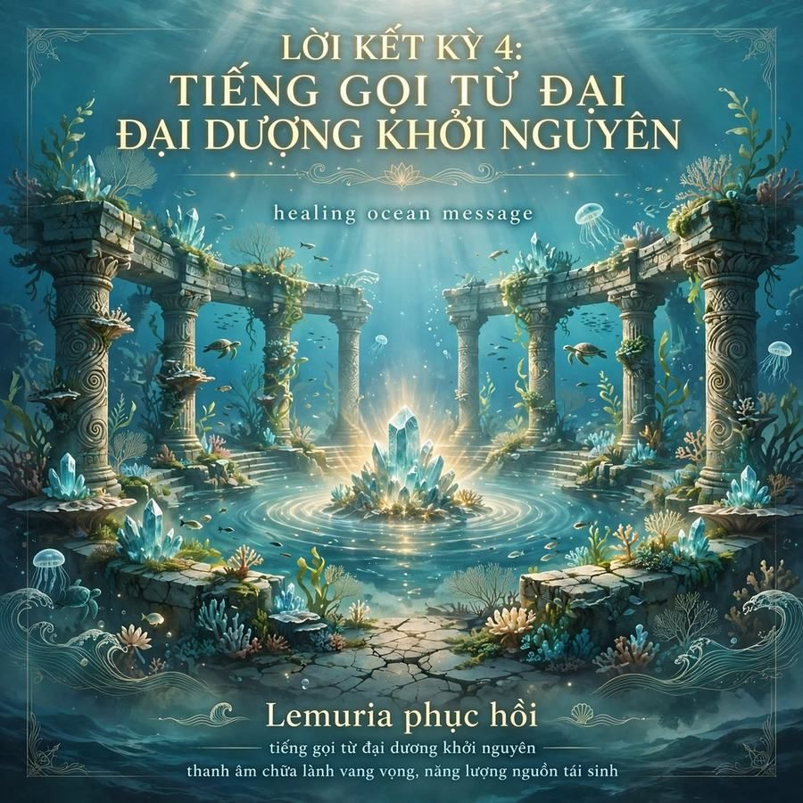
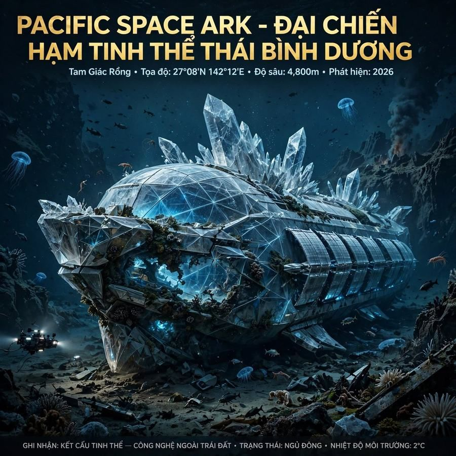
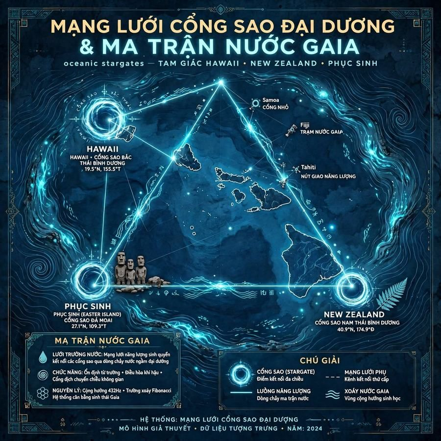
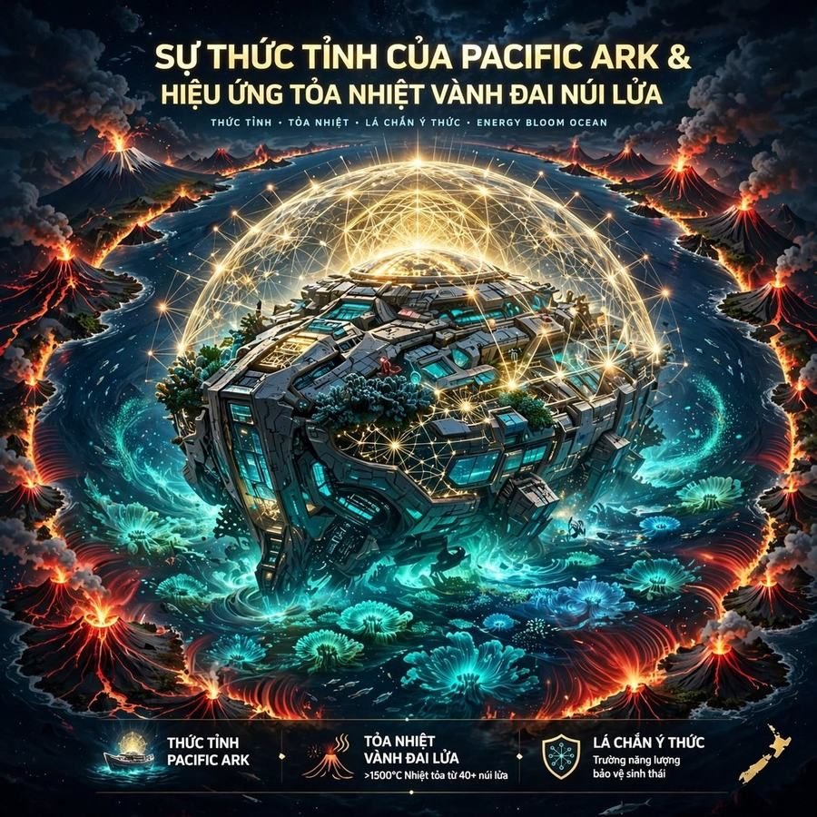
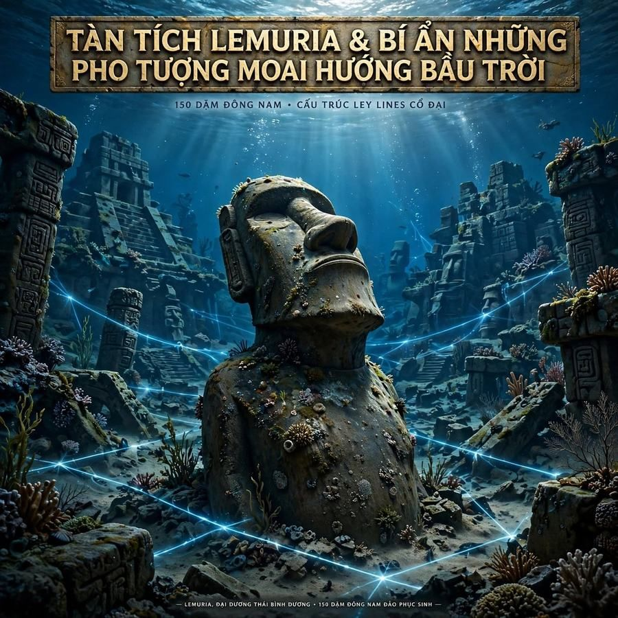

Trang chủ / Chuyên đề 6: Hòm Không Gian Cổ Đại / Kỳ 54
Chuyên đề 6 · Kỳ 54 / 100
HÒM KHÔNG GIAN ĐẢO PHỤC SINH & QUẦN THỂ ĐẠI DƯƠNG NGẦM THÁI BÌNH DƯƠNG (LEMURIA / MU)

Ở Kỳ 3, chúng ta đã cùng nhau thâm nhập vào chiếc Hòm Không Gian Nam Cực nằm sâu 3,7 km dưới lòng Hồ Vostok — nơi tỏa ra dải nhiệt kỷ lục làm tăng 40°C tại Đông Nam Cực và cất giữ Cổng Sao kết nối trực tiếp với Ai Cập và Tây Tạng. Hôm nay, chuyến hành trình giải mã di sản khởi nguyên sẽ đưa chúng ta vượt qua những đại dương rộng lớn, hướng về vùng biển Thái Bình Dương bao la — nơi tọa lạc của hòn đảo bí ẩn nhất hành tinh: Đảo Phục Sinh (Easter Island) và chiếc Hòm Không Gian Thái Bình Dương (Pacific Space Ark)! Điều gì thực sự ẩn giấu ở độ sâu hàng trăm mét bên dưới lòng biển Thái Bình Dương, khoảng 150 dặm về phía Đông Nam Đảo Phục Sinh? Tại sao quần thể đền thờ nguyên vẹn của nền văn minh cổ đại Lemuria (Mu) lại được các tàu ngầm thám hiểm phát hiện dưới đáy đại dương? Sự thật về chiếc Hòm Không Gian Pacific Ark — một trong những con tàu đại chiến hạm khổng lồ nhất Trái Đất bên cạnh Hòm Đại Tây Dương — vận hành ra sao? Bí ẩn đằng sau hàng trăm pho tượng đá Moai khổng lồ đứng sừng sững nhìn đăm đăm ra chân trời là gì? Và mạng lưới Cổng Sao đại dương (Oceanic Stargates) kết nối tam giác Hawaii – New Zealand – Đảo Phục Sinh đang thức tỉnh thế nào khi dải tần số Kỷ nguyên Mới 5D dội xuống?
1. TÀN TÍCH LEMURIA & BÍ ẨN NHỮNG PHO TƯỢNG MOAI HƯỚNG BẦU TRỜI
Đảo Phục Sinh từ lâu đã nổi tiếng với hàng trăm tượng đá khổng lồ Moai. Tuy nhiên, dưới góc nhìn exopolitics và dữ liệu giải mật, đây không chỉ là di tích khảo cổ thông thường mà là chứng nhân cho sự tương tác giữa con người và các tộc sao vũ trụ. A. Pho Tượng Moai & Ký Ức Về Các Tộc Sao Vũ Trụ
- Tượng Đá Hướng Về Chân Trời: Các pho tượng Moai được tạo ra từ ký Ức di truyền cổ đại của cư dân Lemuria. Những bức tượng đứng sừng sững ngoảnh mặt ra đại dương, nhìn đăm đăm về phía chân trời như một biểu tượng vật lý ghi nhớ và chờ đón sự trở lại của các tộc sao từ bi (như người Arcturus và các sinh mệnh đại dương Alithir).
- Điểm Neo Tần Số Năng LƯỢNG Địa Từ: Vị trí đặt các pho tượng Moai nằm chính xác trên các đường kinh mạch địa từ (Ley Lines) kết nối trực tiếp với ma trận từ trường lòng đất Thái Bình Dương. B. Quần Thể Đền Thờ Cổ Đại Lemuria Dưới Lòng Biển
- Phát Hiện Ở Độ Sâu Dưới Đại Dương: Cách Đảo Phục Sinh khoảng 150 dặm về phía Đông Nam, dưới độ sâu hàng trăm mét nước biển, là một quần thể đền thờ khổng lồ thuộc văn minh Lemuria (Mu) vẫn còn nguyên vẹn. Các tàu ngầm thám hiểm đã ghi nhận các cấu trúc kim tự tháp bậc thang, các trụ đá thạch anh và đường ống dẫn năng lượng bằng hợp kim cổ đại không bị ăn mòn.

2. PACIFIC SPACE ARK — ĐẠI CHIẾN HẠM TINH THỂ THÁI BÌNH DƯƠNG
Bên cạnh chiếc Hòm Không Gian Đại Tây Dương, vùng biển Thái Bình Dương là nơi an nghỉ của chiếc Pacific Space Ark — con tàu Hòm Không Gian có kích thước thuộc hàng lớn nhất trên hành tinh Trái Đất. A. Vị Trí Chiến Lược Trong Tam Giác Rồng (Dragon's Triangle)
- Chìm Sâu Dưới Lớp Trầm Tích Đại Dương: Pacific Space Ark nằm ở vùng biển sâu Thái Bình Dương, nối liền với mạng lưới đĩa địa từ kéo dài từ Biển Nhật Bản, khu vực Tam Giác Rồng đến quần đảo Hawaii và Đảo Phục Sinh.
- Cấu Trúc Tinh Thể Hữu Cơ Khổng Lồ: Con tàu có kích thước kéo dài nhiều kilômét, được bao bọc bởi lớp vỏ hợp kim tinh thể hữu cơ cao tần có khả năng tự điều biến áp suất nước và phát ra nguồn ánh sáng xanh lam dịu nhẹ. B. Ngân Hàng Di Truyền & Thư Viện Sinh Học Cổ Đại
- Lưu Giữ Mã Gen Đa Dạng Sinh Học Mu: Pacific Space Ark đóng vai trò là một kho lưu trữ mẫu gen sinh học và di sản văn hóa nguyên thủy của đại lục Lemuria trước khi thảm họa đại địa chất nhấn chìm vùng biển này hàng chục ngàn năm trước.

3. MẠNG LƯỚI CỔNG SAO ĐẠI DƯƠNG (OCEANIC STARGATES) & MA TRẬN NƯỚC GAIA
Nền văn minh Lemuria cổ đại vốn làm chủ các công nghệ tần số nước và ma trận từ trường đại dương. A. Tam Giác Năng Lượng Hawaii – New Zealand – Đảo Phục Sinh
- Cổng Ngõ Năng Lượng Nối Liền Các Lực Địa: Quần thể Pacific Ark cùng các cổng sao ngầm tạo thành một tam giác từ trường khổng lồ bao phủ toàn bộ Thái Bình Dương. Cổng sao này nối thẳng với các căn cứ ngầm bên dưới rãnh đại dương và các Hòm Không Gian khác trên Trái Đất.
- Tương Tác Với Ma Trận Nước: Nước biển tại vùng đại dương này đóng vai trò là chất dẫn truyền lượng tử. Khi Hòm Không Gian Pacific Ark được kích hoạt, nó phát ra dải tần số vô hướng chạy qua các dòng hải lưu, truyền tải năng lượng thức tỉnh đến tất cả các loài sinh vật biển và hệ sinh thái toàn cầu.

4. SỰ THỨC TỈNH CỦA PACIFIC ARK & HIỆU ỨNG TỎA NHIỆT VÀNH ĐAI NÚI LỬA
Khi hạm đội Liên Minh Các Đấng Sáng Lập (The Seeders) tiến vào Hệ Mặt Trời tại khu vực Sao Mộc vào cuối năm 2021, Pacific Space Ark đã chính thức bước vào giai đoạn thức tỉnh. A. Dải Tần Số Tỏa Nhiệt & Tương Tác Địa Từ
- Bùng Nổ Xung Năng Lượng Vô Hướng: Các vệ tinh quan sát địa từ ghi nhận sự bùng nổ xung từ trường và dải nhiệt lượng bốc lên từ lòng đại dương Thái Bình Dương. Sự thức tỉnh của con tàu giúp cân bằng lại dải từ trường cho Vành đai Núi lửa Thái Bình Dương (Ring of Fire), ngăn ngừa các trận đại địa chấn thảm khốc trên bề mặt. B. Lá Chắn Bảo Vệ Ý Thức Vô Hình
- Không Thể Xâm Nhập Bằng Công Nghệ Thô: Tương tự như Hòm Đại Tây Dương hay Hòm Vostok, Pacific Space Ark được bảo vệ bởi rào chắn tần số tâm thức cực mạnh. Mọi tàu thám hiểm quân sự hay thiết bị bẻ khóa thô ráp của các thế lực bóng tối khi tiến gần đều bị ma trận từ trường của tàu làm vô hiệu hóa hoàn toàn. Tàu chỉ mở ra và phản ứng trước Mã gen DNA Paa-Taal và Tần số Trái Tim từ bi!

5. LỜI KẾT KỲ 4: TIẾNG GỌI TỪ ĐẠI DƯƠNG KHỞI NGUYÊN
Kỳ 4 của chuyên đề 6 khép lại mang đến thông điệp chữa lành rực rỡ từ đáy đại dương:
- Di Sản Lemuria Đang Phục Hồi: Pacific Space Ark và quần thể đền thờ cổ đại dưới lòng Thái Bình Dương đang thức tỉnh, trả lại trọn vẹn tri thức Tình Yêu Thương và sự hòa hợp với thiên nhiên cho nhân loại Trái Đất.
- Kích Hoạt Dòng Nước Tâm Thức NỘI TẠI: Nước trong cơ thể bạn chính là một anten thu nhận tần số. Khi bạn giữ tâm trí bình an, gửi lời yêu thương đến chính mình và muôn loài, bạn đang cộng hưởng hoàn hảo với nhịp đập từ trường của Hòm Không Gian Thái Bình Dương!
